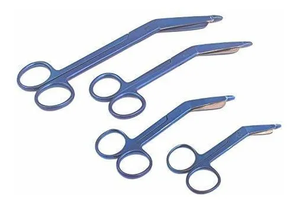

Instrumentos Quirurgicos
🔪
Bisturí:
Instrumento quirúrgico con una hoja muy afilada que se utiliza para realizar cortes precisos en los tejidos durante una operación.

🔪
Bisturí:
Instrumento quirúrgico con una hoja muy afilada que se utiliza para realizar cortes precisos en los tejidos durante una operación.